Good, Bad, Funny
Introducing yourself through real stories and a cultural dimension dossier. Personal experience becomes evidence of how communication styles shape international teamwork.
What was the quest?
Quest 1 asked each team member to write three short stories from their own experience — one good, one bad, one funny — and identify a cultural insight across those stories. The second part required a mini-dossier on one cultural dimension: defining the concept, providing data points for the home country and the Netherlands, and explaining what this means for working together in an international team.
Each member wrote their own stories and chose a cultural dimension to research. The work was then combined into a single group PowerPoint. The dimension that runs through the exhibition is directness and communication style — how cultures express thoughts, give feedback, and handle honesty.
Elina Nilisani
Cultural dimension: communication style · IranHigh-context speech, Ta'arof, and soft feedback — read against Dutch directness, and what that gap does to an international team.
Research statement
This cultural dimension is about how people communicate with each other and how they express their thoughts, opinions, and feelings. In Elina’s dossier the contrast is not abstract: it is the difference between meaning that lives in context, and meaning that is expected to live in the sentence itself.
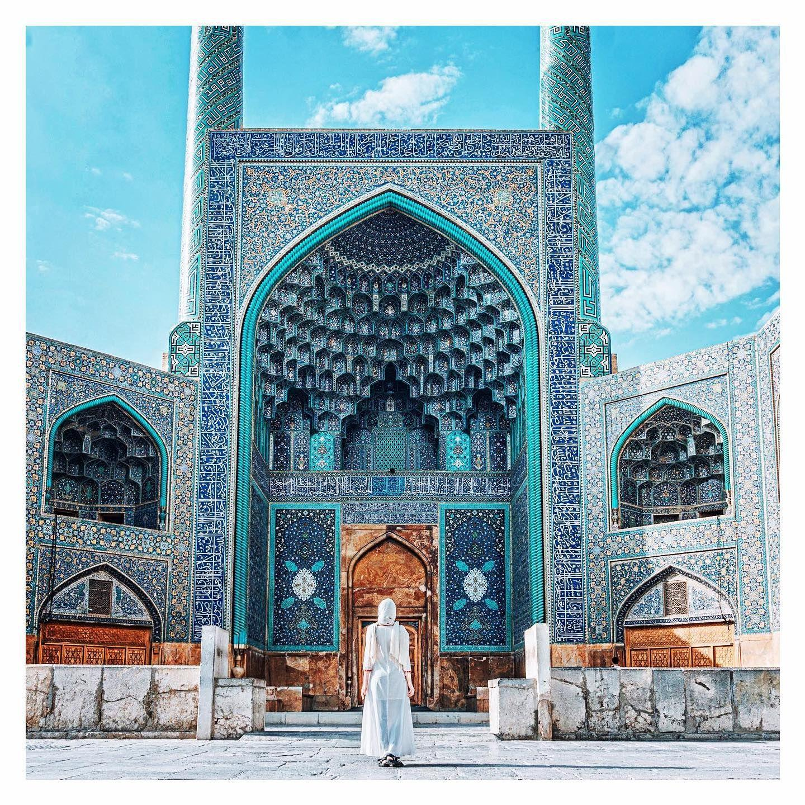
Iran
- Indirect style: Iran generally has a high-context communication style. People may not always express everything directly with words, and the listener is sometimes expected to understand the meaning from context, tone, or behavior. Ta'arof is a clear example of this style.
- Soft feedback: In the Iranian workplace, people may prefer to give negative feedback gently instead of criticizing someone directly. Around 65% of workers prefer softer language when giving bad news or negative feedback.
Source: Fidibo — Ta'arof and Iranian communication culture
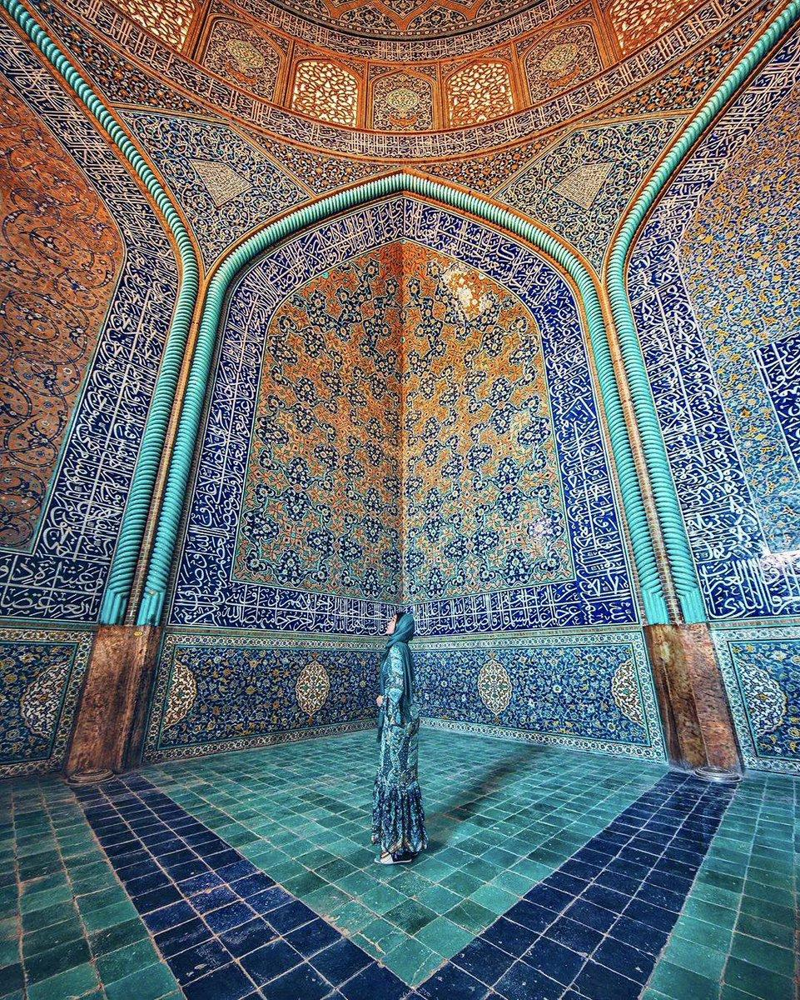
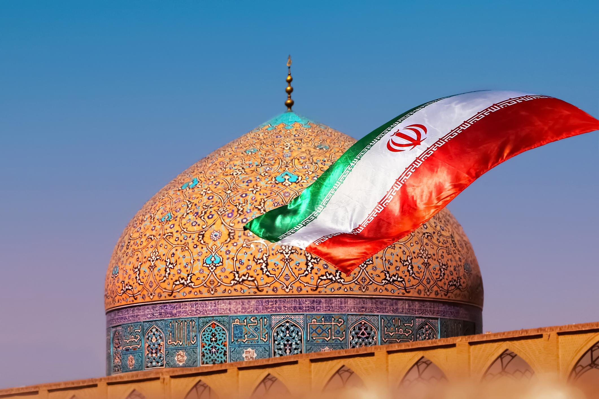
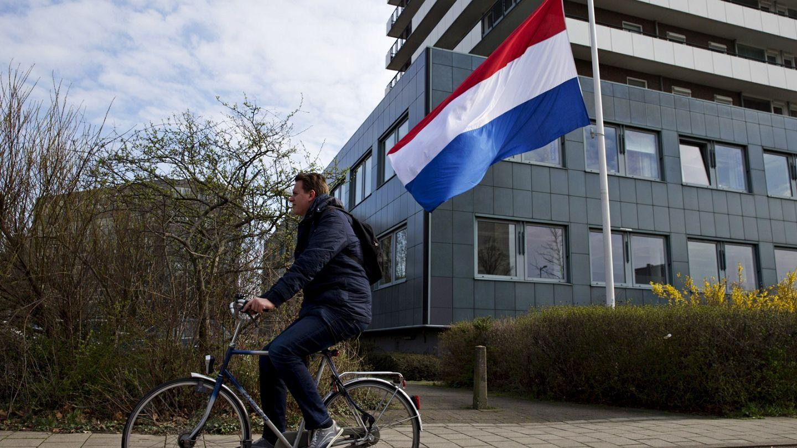
The Netherlands
- Very direct: The Netherlands is known for a very direct communication style and is ranked among the top three most direct countries in the world.
- Honest feedback: More than 85% of Dutch workers prefer quick, clear, and honest feedback without unnecessary polite words.
Source: KNM
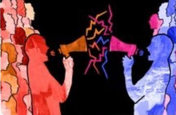
What this means for collaboration
Different communication styles can create misunderstandings when Iranian and Dutch people work together. A Dutch colleague might say “This work is bad” — meaning the work needs improvement — while an Iranian colleague might hear it as rude or personally offensive.
Another common problem happens when someone needs to say no. An Iranian person might say “I will try” instead of a direct “No,” but a Dutch colleague may understand that as a commitment to complete the task.
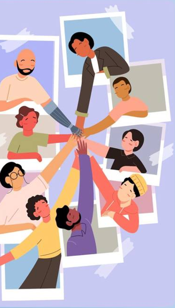
Matthew Jacob Sarkodie Darkwah
Cultural dimension: directness & openness · ItalyItalian openness and Dutch frankness look similar on paper. The research is about the texture of that directness — warmth and wrapping versus shortness and speakability.
Communication styles
Communication style refers to the consistent patterns of verbal and non-verbal behavior individuals use to express thoughts, feelings, and needs. The four main styles in the dossier are:
- Passive: avoids conflict and expresses thoughts indirectly
- Aggressive: dominates and expresses thoughts forcefully
- Passive-aggressive: expresses feelings indirectly through sarcasm or backhanded compliments
- Assertive: clearly and respectfully expresses thoughts and needs
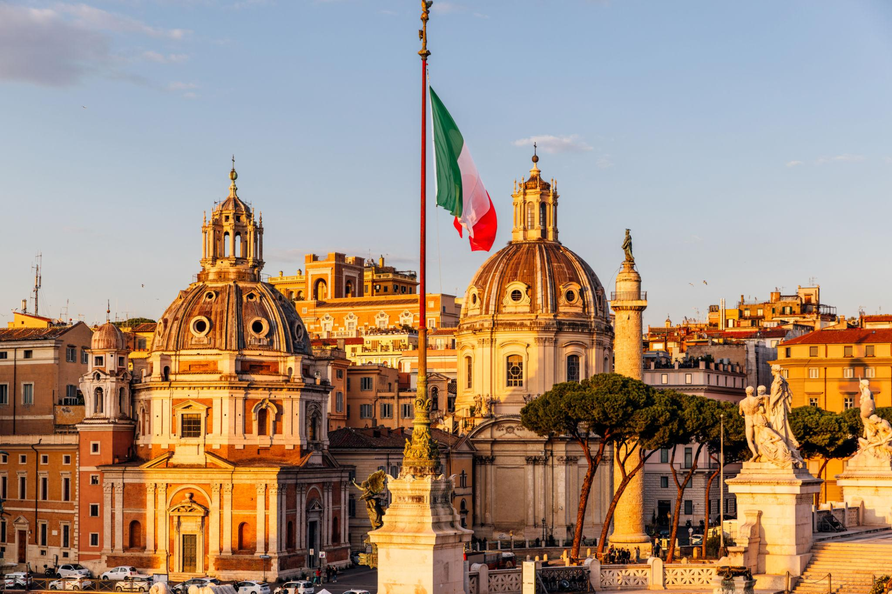
Home country — Italy
Italian communication is generally described as direct. Italians tend to be open about their emotions and speak clearly about their point. From a conversation they generally expect similar honesty from a partner.
The Italian style is generally open and bold. Expecting to either dictate or narrate your own life story should be a norm to get used to. Raised voices and humour also play a role. Italians often enjoy joking throughout conversations to lighten the mood.
Source: Italian – Communication — Cultural Atlas, Mosaica (2024)
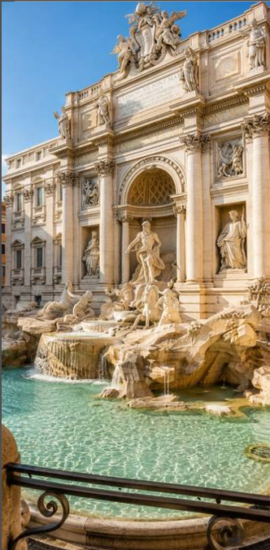
Being direct does not mean acting blunt or annoying. The study “Dirlo o non dirlo?” shows that Italians and Dutch people often use similar strategies, but Italian speech can also contain softeners — apologies, downtoners, more tactful wording. That is why Italians can still sound more “wrapped” even when they are being direct.
Source: Schuiringa & Pinto (2015), Tilburg, Netherlands
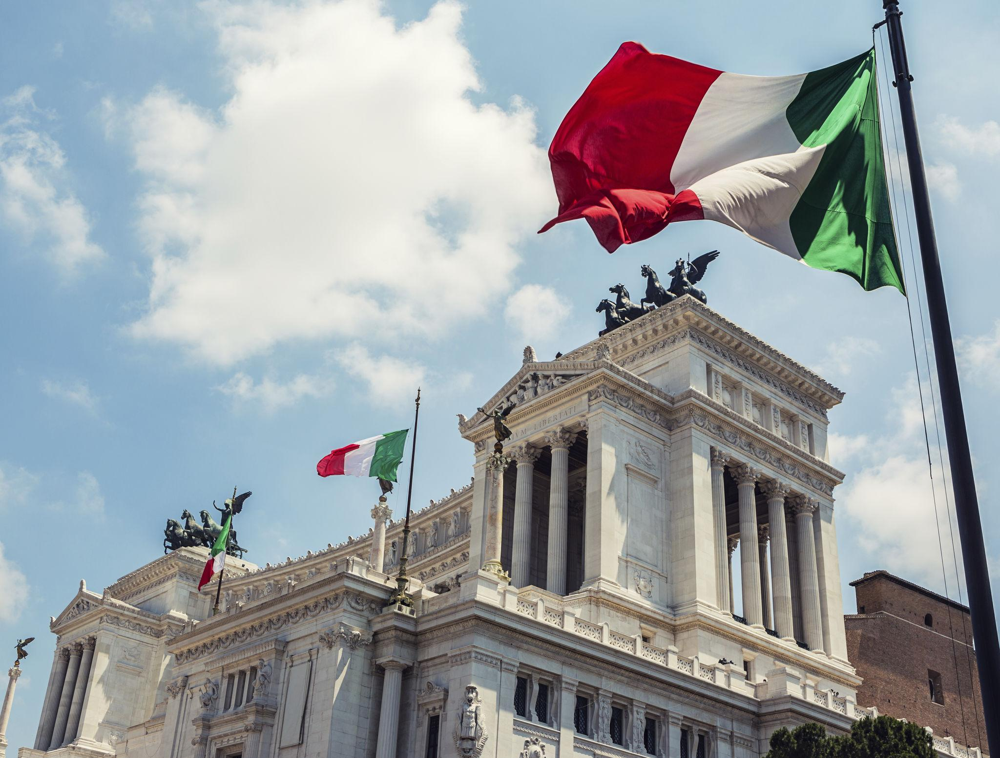
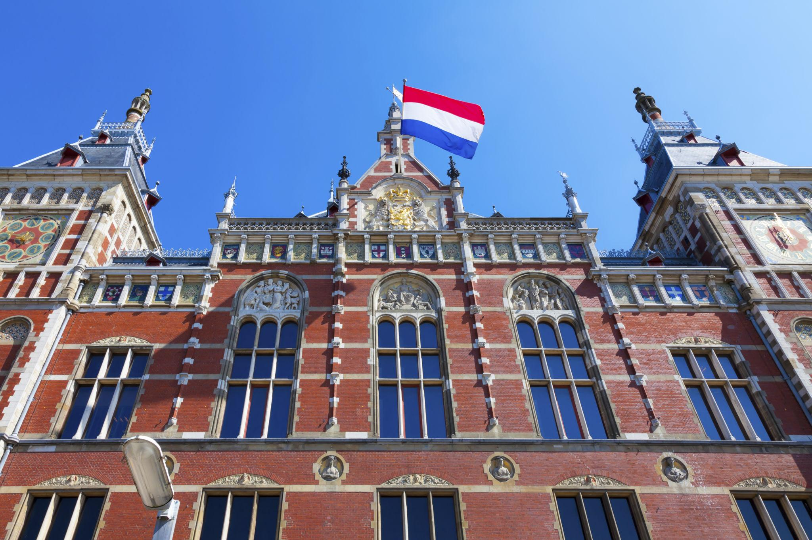
Netherlands
Dutch communication is also described as very direct, but in a more short and practical way. Dutch people tend to speak quite frankly and in a straightforward manner. At times this may be misunderstood as rude, especially if one is not used to forthrightness.
There is even a Dutch idea of bespreekbaarheid (speakability): the idea that things can and should be talked about. Saying “no” directly is not seen as rude, but as clear.
Source: Dutch – Communication — Cultural Atlas, Mosaica (2024)
Working together
Working together can be a positive experience and an opportunity to explore cultural values and differences. Small differences in communication styles can sometimes affect teamwork, but these misunderstandings can often be solved through clear communication.
Thijmen Verschuur
Group construction · PowerPoint developmentThijmen’s documented contribution for this quest is the construction of the group artifact — turning three separate dossiers into one presentation.
Role in the exhibition
A cultural-dimension mini-dossier for Thijmen is not published as standalone research in the current repository. What is documented is his work on the PowerPoint and on assembling the group artifact for Quest 1. That labour is part of the evidence: the exhibition exists because individual writing was sequenced, compared, and given a shared visual form.
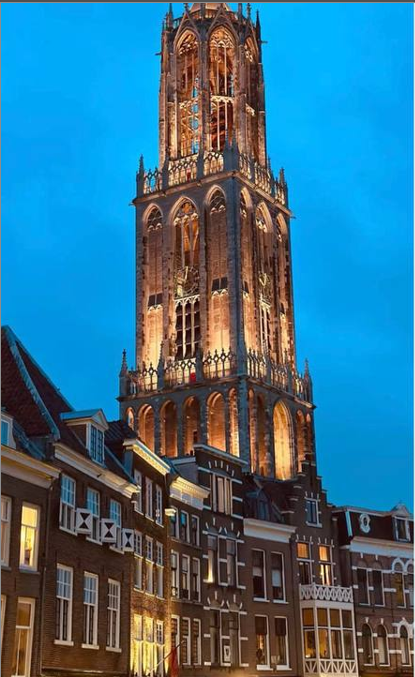
What changed when the three perspectives met?
Read alone, each dossier describes a home culture against the Netherlands. Read together, the same dimension — directness — splits into three textures: high-context softness (Iran), wrapped expressiveness (Italy), and short speakability (the Netherlands).
The group result is not a ranking of which style is better. It is a working map: a sentence that sounds efficient in one register can sound incomplete or harsh in another. The PowerPoint is where those maps were placed side by side.
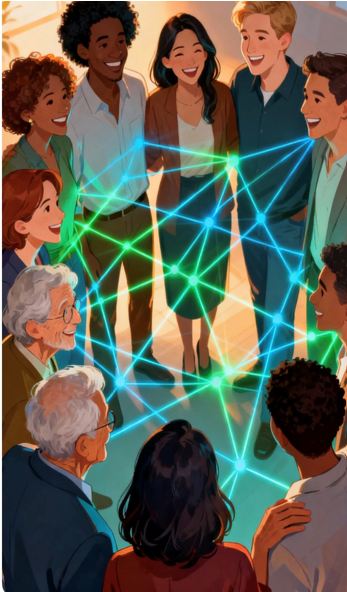
PowerPoint
The website is an interpretation of the same work: individual research, visual evidence, and group synthesis. The presentation remains the original shared object.
View presentationIf a hosted file is added to the repository, this action should point at that file. The current branch does not include an embedded deck.